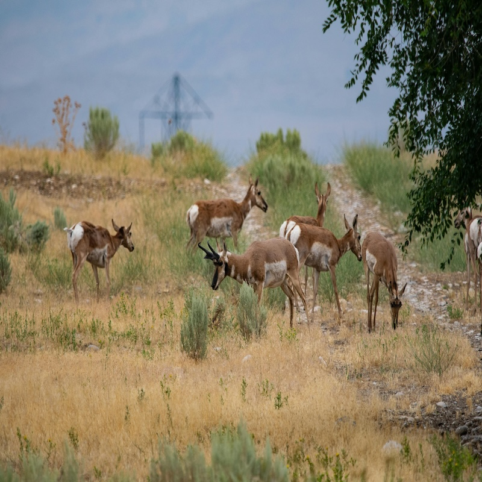
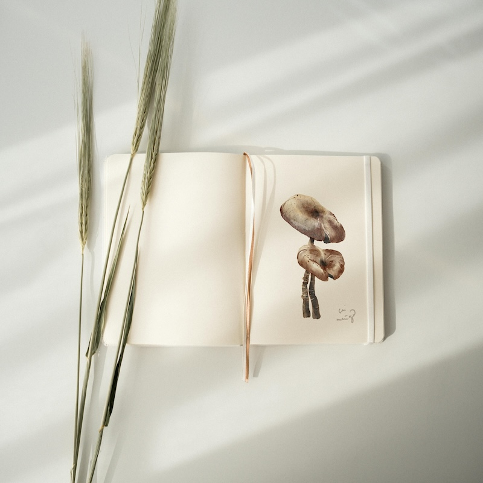

Home
Wildlife Art & Creativity
Media
Logo Placeholder
Multimedia Experience
Your browser does not support the video tag.
Ambient Nature Sounds
Your browser does not support the audio element.
Image Gallery
 